research assistant & ph.d. ML
at SCUT
eeahmadamin at mail.scut.edu.cn
I am interested in helping humans by designing trustworthy and explainable machine learning models for multimedia forensics, privacy, and information security. My long-term research goal is to develop advanced embodied AI systems utilizing multiple agents and modalities (such as language, vision, and audio) across diverse research fields.
I believe the language that humans and machines communicate must be human-centered, higher-level, human-friendly concepts so that it can make sense to everyone, regardless of how much they know about ML. My research statement provides a good description of what I want to do and why.
I am working on multiple industrial collaborative research and development projects with GRG Banking Ltd. Further, on several research-based projects, I am collaborating with Professor Chang-Tsun Li at the school of information technology, Deakin University, Australia. Also, with Professor Yu Guan at the department of computer science, University of Warwick, England, and Professor Jiankun Hu at the school of systems and computing, University of New South Wales, Australian Defence Force Academy, Australia.
I believe the language that humans and machines communicate must be human-centered, higher-level, human-friendly concepts so that it can make sense to everyone, regardless of how much they know about ML. My research statement provides a good description of what I want to do and why.
I am working on multiple industrial collaborative research and development projects with GRG Banking Ltd. Further, on several research-based projects, I am collaborating with Professor Chang-Tsun Li at the school of information technology, Deakin University, Australia. Also, with Professor Yu Guan at the department of computer science, University of Warwick, England, and Professor Jiankun Hu at the school of systems and computing, University of New South Wales, Australian Defence Force Academy, Australia.
I am passionate about exploring various research areas, including:
Biometrics and Forensics: Learning for domain generalization, AI-generated multimedia content detection.
Image/Audio/Video Processing: Representation learning, multimodal learning.
Learning with Real-world Data: Un-/self-/semi-/supervised learning.
Stuff I help with:
Review for IEEE International Workshop on Biometrics and Forensics (IWBF).
Review for Digital Signal Processing and Alexandria Engineering Journal.
Volunteer member of Scout Association (Since 2007).
Organizer of China Information Hiding and Multimedia Security Workshop (CIHW 2018).
Biometrics and Forensics: Learning for domain generalization, AI-generated multimedia content detection.
Image/Audio/Video Processing: Representation learning, multimodal learning.
Learning with Real-world Data: Un-/self-/semi-/supervised learning.
Stuff I help with:
Review for IEEE International Workshop on Biometrics and Forensics (IWBF).
Review for Digital Signal Processing and Alexandria Engineering Journal.
Volunteer member of Scout Association (Since 2007).
Organizer of China Information Hiding and Multimedia Security Workshop (CIHW 2018).
Patent
An Adaptive Detection Method for the Upper and Lower Edges of the Low-quality Finger Vein Images.
Yongjian Hu, Muhammad Ahmad Amin, Wan Dongxia, Wang Yufei, and Beibei Liu
Publications
Show me in Google Scholar.
Analyzing Temporal Coherence for Deepfake Video Detection
TL;DR: We introduce a bi-level paradigm for deepfake video detection, combining temporal modeling and coherence analysis. The first level employs temporal modeling to decompose videos into facial patterns, capturing dynamic cues. The second level, TCAN, analyzes temporal inconsistencies using global temporal self-attention. Our approach outperforms prior techniques, showing effectiveness in intra- and cross-dataset evaluations.
Muhammad Ahmad Amin, Yongjian Hu, Jiankun Hu
[Electronic Research Archive 2024] 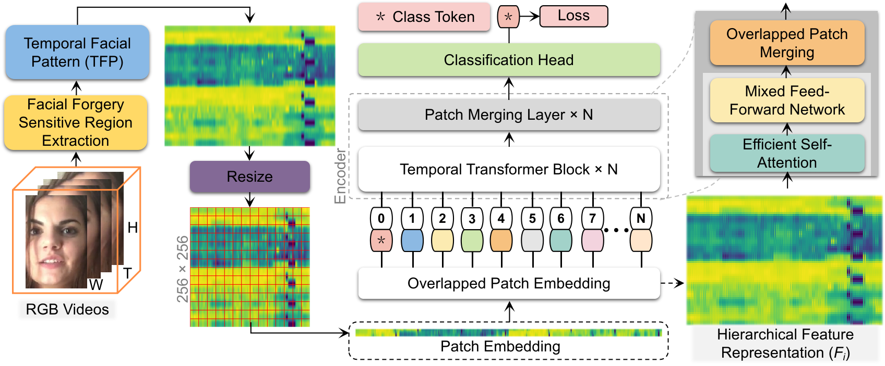
[Electronic Research Archive 2024] 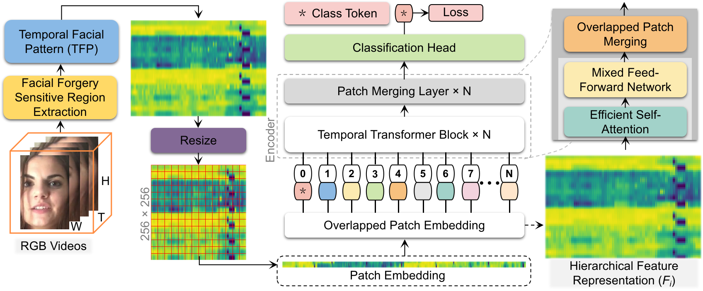
Deepfake Detection based on Cross-Domain Local Characteristic Analysis with Multi-domain Transformer
TL;DR: We introduce SVFT, a novel deepfake detection method combining frequency domain analysis and spatial artifacts for better generalization. SVFT outperforms state-of-the-art methods in various scenarios, with significant improvements in AUC across different manipulation types. Overall, SVFT shows promise in advancing deepfake detection, offering robust capabilities.
Muhammad Ahmad Amin, Yongjian Hu, Chang-Tsun Li, Beibei Liu
[Alexandria Engineering Journal 2024] 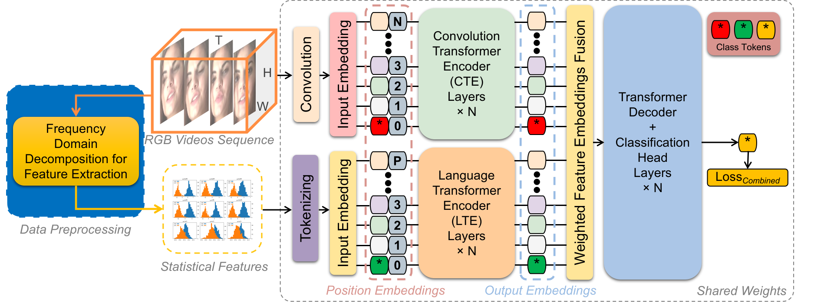
[Alexandria Engineering Journal 2024] 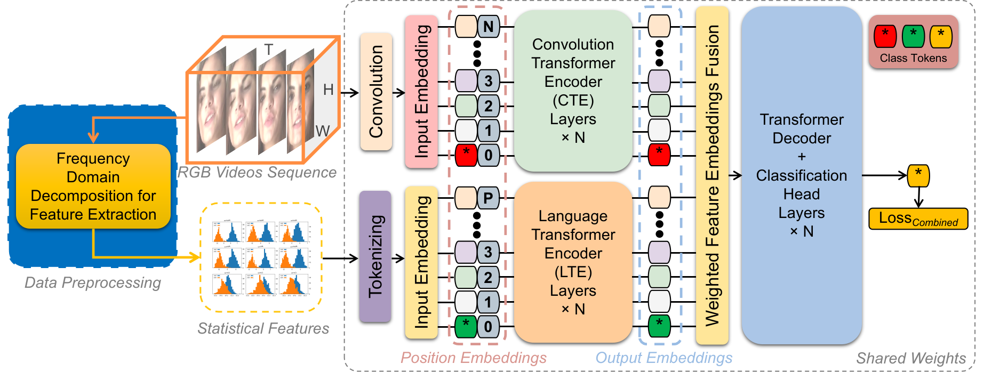
Exploring Varying Color Spaces through Representative Forgery Learning to Improve Deepfake Detection
TL;DR: We developed a forgery detection framework using multiple color spaces, combining them strategically to improve performance. Our method enhances forgery cues, transforms color spaces, employs auxiliary supervision, and extracts clues using a dedicated feature extractor. We tested it on various deepfake datasets, achieving outstanding performance with HSV and HSL color spaces and strong resistance to compression with YCrCb and YUV. Combining all four color spaces significantly improved performance. Overall, our method is versatile and adaptable to detecting forged elements across different datasets.
Muhammad Ahmad Amin, Yongjian Hu, Yu Guan, Muhammad Zain Amin
[Digital Signal Processing 2024] 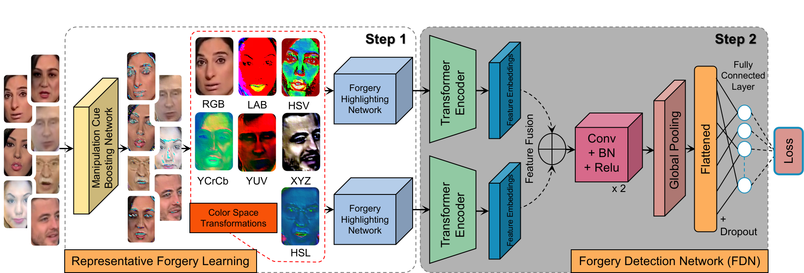
[Digital Signal Processing 2024] 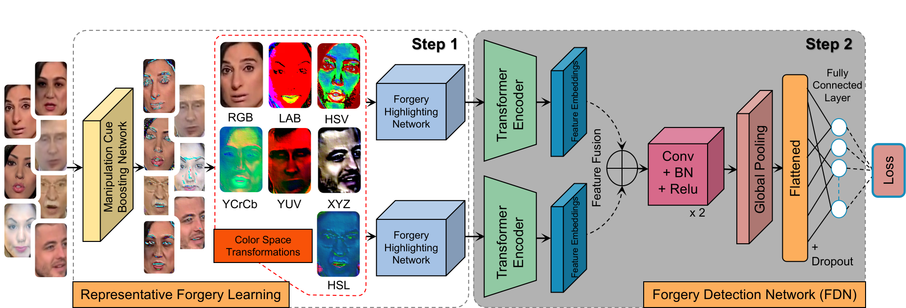
Exposing Deepfake Frames through Spectral Analysis of Color Channels in Frequency Domain
TL;DR: We explored spectral analysis in the frequency domain to detect anomalies in deepfake generation. Our statistical features effectively identified spectral anomalies in unsupervised and supervised settings across datasets. Compared with other methods, ours accurately separated real and fake samples, even under mild compression. However, supervised learning showed unique spectral patterns in diverse datasets, posing challenges for generalization. Detectors based solely on spatial domain tend to overfit, suggesting the need for combining multiple feature domains to improve generalization.
Muhammad Ahmad Amin, Yongjian Hu, Huimin She, Jicheng Li, Yu Guan, Muhammad Zain Amin
[IEEE IWBF 2023] 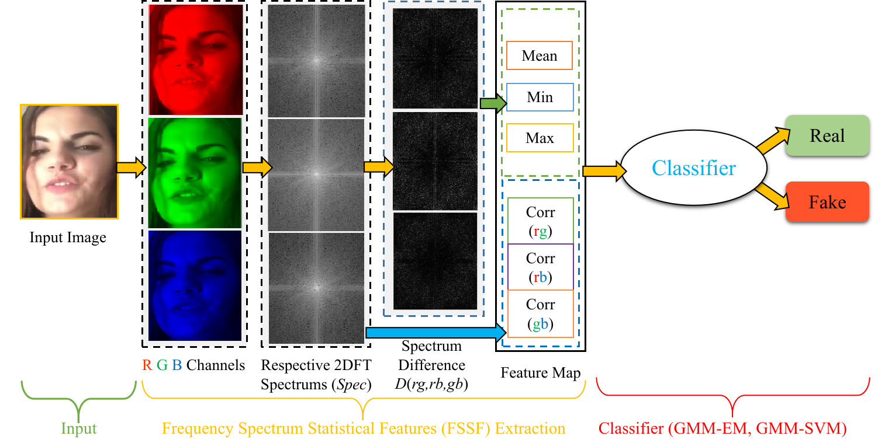
[IEEE IWBF 2023] 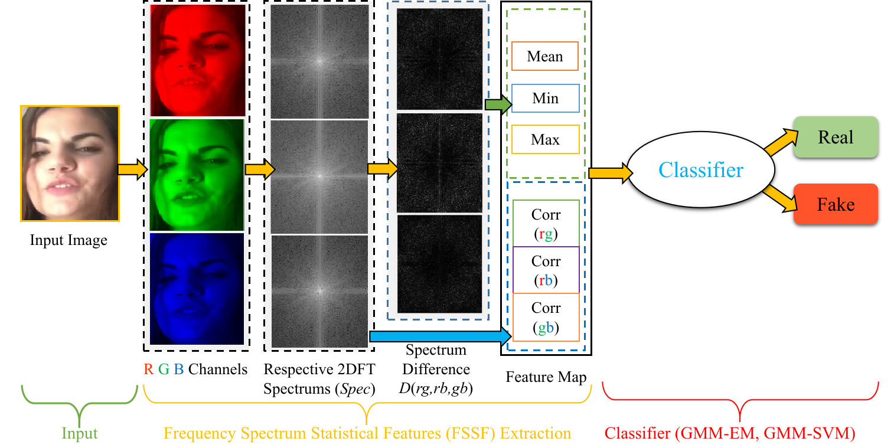
This list contains co-authored articles...
Notifyminer: Rule based User Behavioral Machine Learning Approach for Context wise Personalized Notification Services
TL;DR: We introduce BADT, a machine learning rule-based method for extracting non-redundant behavioral association rules from user notifications. Utilizing real-world data collected via the NotifyMiner app, we create a behavioral Adversarial Tree based on multidimensional contexts like location and app type. This enables us to model user notification interactions and identify responsive delays caused by various contexts. We envision its application in developing context-aware notification interruption apps to intelligently assist users in their daily activities.
Muhammad Faizan Khan, Lu Lu, Muhammad Toseef, Ahmed Musyafa, Muhammad Ahmad Amin
[JAIHC 2022] 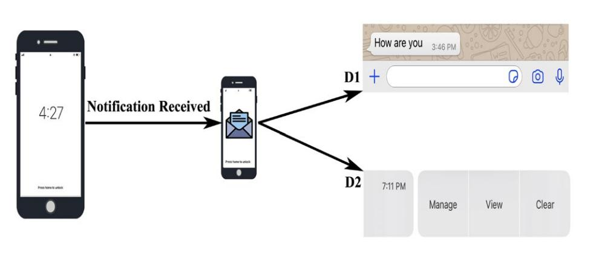
[JAIHC 2022] 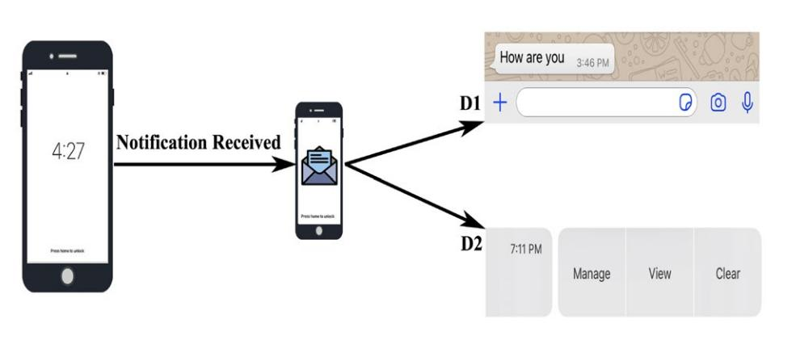
Detecting Video Inter-frame Forgeries based on Convolutional Neural Network Model
TL;DR: We introduce a method using CNN-based models to detect inter-frame forgeries in videos, capitalizing on spatial-temporal relationships for robust detection. Additionally, we propose a confidence score mechanism to enhance accuracy. Our approach demonstrates significantly higher efficiency.
Xuan Hau Nguyen, Yongjian Hu, Muhammad Ahmad, Gohar Hayat Khan, Van Thinh Le
[IJIGSP 2020] 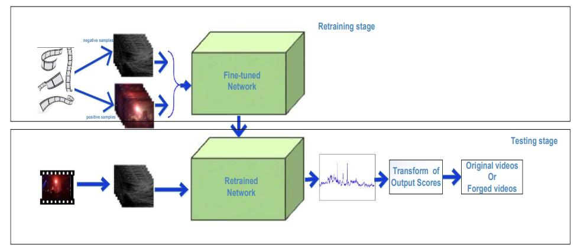
[IJIGSP 2020] 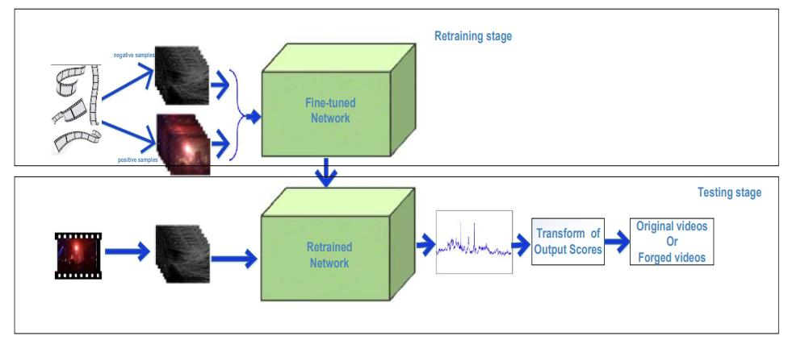
Three-dimensional Region Forgery Detection and Localization in Videos
TL;DR: We introduce an algorithm for detecting and localizing 3-D region duplication forgery in videos, targeting small region and frame sequence duplications.
Xuan Hau Nguyen, Yongjian Hu, Muhammad Ahmad Amin, Gohar Hayat Khan, Van Thinh Le
[IJIGSP 2019] 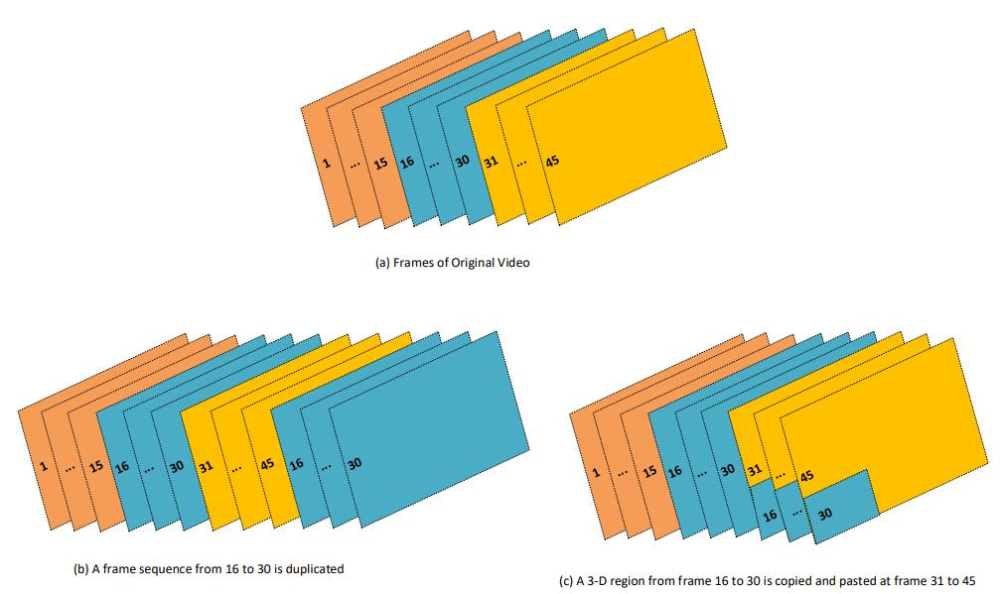
[IJIGSP 2019] 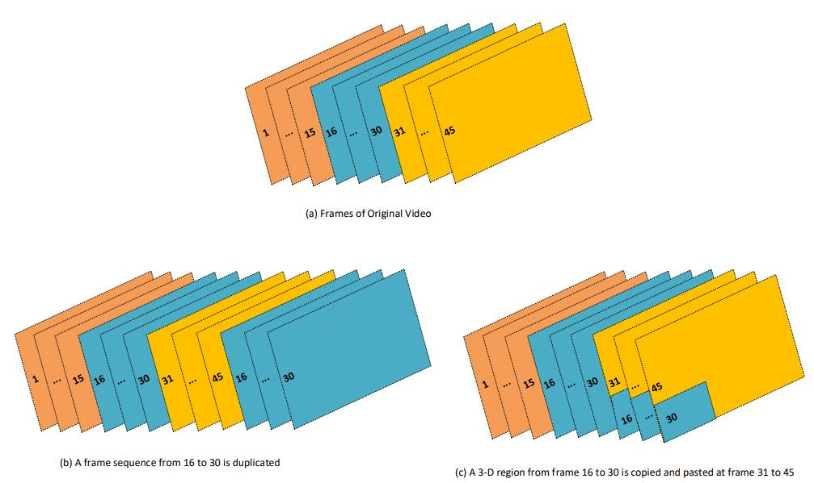
Selected Media Coverage
News and career updates. -> from 2018 onward.
03. 2024 One paper got accepted to the Journal of
Electronic Research Archive is now available online.[link]
03. 2024 One paper accepted to the Journal of Alexandria Engineering Journal is now available online.[link]
02. 2024 One paper accepted to the Journal of Digital Signal Processing is now available online.[link]
11. 2023 I attended a workshop on Future trends in Multimedia Forensics at the SCUT organized by
Prof. Alex Kot, Director, ROSE Lab, Nanyang Technological University!
04. 2023 One paper is accepted to the 11th IEEE International Workshop on Biometrics and Forensics in Barcelona, Spain.
06. 2022 One patent is awarded by China National Intellectual Property Administration!
05. 2022 One paper got accepted to the Journal of Ambient Intelligence and Humanized Computing on a rule-based user behavioral machine learning approach.
...Absence for a while from 2020 to 2022 due to COVID!...
03. 2020 One paper got accepted to the International Journal of Image, Graphics and Signal Processing.[link]
10. 2019 One paper got accepted to the International Journal of Image, Graphics and Signal Processing.[link]
10. 2018 I started working on collaborative projects at R & D Institute, GRG Banking LTD!
09. 2018 I join the Research Centre of Multimedia Information Security Detection and Intelligent Processing at SCUT as a Ph.D. student, advised by Professor Yongjian Hu.
07. 2018 I filed for a patent application based on my thesis entitled "An Adaptive Detection Method for the Upper and Lower Edges of the Low-quality Finger Vein Images".
06. 2018 I won the Excellent Graduate Student's Award from the School of Electronics and Information Engineering and School of International Education.
06. 2018 I won the best Master of Engineering Dissertation Award from the School of Electronics and Information Engineering.
05. 2018 I successfully defended my Master of Engineering dissertation titled "A Study on the Preprocessing of Finger Vein Recognition System" at SCUT.